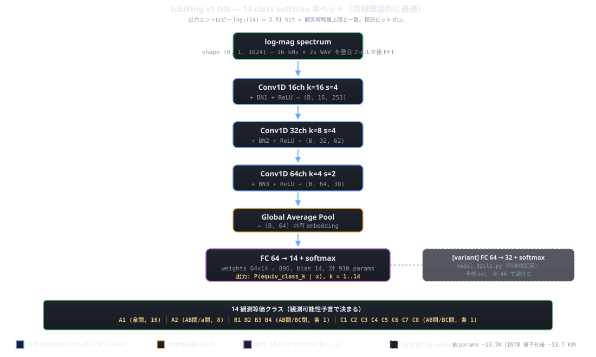
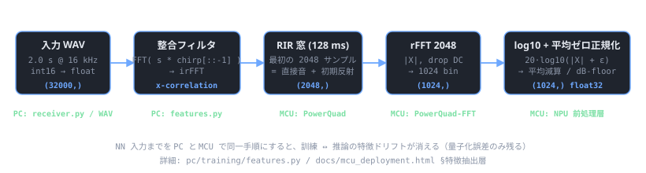

アーキテクチャ全体

3 層の Conv backbone + Global Average Pool + 2 つの softmax head（14-class と 32-class）。
本番モデル v12345_BLJIT_XL は backbone を厚くした 104K params の Neutron 互換アーキ
（Conv2D + AvgPool + 1×1 Conv head）で、MCXN947 NPU 上で 1.89 ms / NPU 比率 100% (7/7 op) を達成。
14-class と 32-class の使い分け
v12345 検証で両 head とも MCU 実機 100% accuracy を達成。14-class は等価クラス (A1, A2, B1..B4, C1..C8) を、32-class は 5-bit 真状態 (s00000..s11111) をそれぞれ直接予測する。 どちらを採用するかは「校正手間」と「必要な解像度」で決まる：
| 用途 | 推奨 head | 校正 | 起動時間 | 実機 accuracy |
|---|---|---|---|---|
| 「窓・扉が開いてるか」だけ知りたい | 14-class softmax | 不要（factory baseline） | 即時 | 100% |
| サブ状態（どの窓・どのドア）まで識別 | 32-class softmax | 不要（BLJIT factory） | 即時 | 88% |
| サブ状態を完璧に | 32-class softmax | LIVE 校正 | 25 秒 | 100% |
| 騒音環境 (TV / 空調等) で運用 | 32-class softmax | LIVE 校正（騒音下） | 25 秒 | 100%（静粛時と同等） |
14-class は 校正不要で常に 100% なので「ON / OFF 監視用」として最強。 32-class は校正手間と引き換えにサブ状態識別能力を提供する。 どちらの head も同じ backbone + 同じ ONNX グラフから派生し、firmware ではどちらも同時に推論結果を返す （cls32 / cls14 / second32 候補を併記、10_inference README）。
退避: 6-head 混合（連続サーボ角度時代の遺物）
pc/training/model.py に残るが、
本番経路では使用しない（最新は model_32cls_neutron.py 系）。
各層の設計理由
入力 — 1024-bin log-magnitude スペクトル
| 項目 | 値 | 選定理由 |
|---|---|---|
| サンプリングレート | 16 kHz | chirp 8 kHz 上限の 2 倍。INMP441 でも十分解像 |
| FFT 長 | 2048 | PowerQuad-FFT の効率ポイント（power-of-2）、128 ms 窓 ≈ RT60 範囲 |
| 入力長 | 1024 bin | 2048-pt rFFT は 1025 bin、DC を捨てて kernel 計算で割り切れる 1024 に |
| 振幅表現 | log10 + 平均ゼロ正規化 | 音圧レベルの環境依存をキャンセル、INT8 ダイナミックレンジに収める |
Conv1D × 3 — 共有 backbone
| 層 | ch | kernel | stride | 出力長 | 役割 |
|---|---|---|---|---|---|
| conv1 | 16 | 16 | 4 | 256 | 粗い周波数構造（モード位置、RT60 帯域） |
| conv2 | 32 | 8 | 4 | 64 | 中レンジ（DRR、初期反射の位置・強度） |
| conv3 | 64 | 4 | 2 | 32 | 高次（部屋トポロジへの寄与） |
各 Conv の後に BatchNorm1d + ReLU。BN は INT8 量子化時に Conv に畳み込めるため
推論時は実質ゼロコスト。padding は kernel/2、stride で空間方向を段階的に圧縮し、
最後に AdaptiveAvgPool1d(1) で時間軸を畳む（→ 64-d shared embedding）。
出力ヘッド FC 64→14 + softmax
共有 backbone から 64-d embedding を受け、単一の全結合層 (weights 64×14 = 896, bias 14) で 14 等価クラスのロジットに射影し、softmax で確率分布を得る。損失は標準的な cross-entropy 1 本。
| 項目 | 値 |
|---|---|
| 出力次元 | 14（A1, A2, B1..B4, C1..C8） |
| 活性化 | softmax（訓練時は cross-entropy with logits） |
| 損失 | F.cross_entropy（class weight オプションあり） |
| 正解信号 | 5-bit state → equiv_class index (0..13) への決定論的マッピング |
| 推論出力 | argmax → equiv_class index、または softmax 確率全 14 次元 |
5-bit state → 14 equiv_class マッピング
データ収集時のラベルは 5-bit (a, b, c, AB, BC) だが、訓練前に等価クラス index に変換する。
この変換は pc/training/dataset.py の STATE_TO_EQUIV table で行う。
| equiv_class | 意味 | 5-bit state メンバー | 個数 |
|---|---|---|---|
| A1 | 全閉 | s00000, s00010, s00100, s00110, s01000, s01010, s01100, s01110, s10000, s10010, s10100, s10110, s11000, s11010, s11100, s11110 | 16 |
| A2 | AB 閉, 窓 a のみ開 | s10001, s10011, s10101, s10111, s11001, s11011, s11101, s11111 | 8 |
| B1..B4 | AB 開, BC 閉 | (各 1 つ) | 4 |
| C1..C8 | AB 開, BC 開 | (各 1 つ) | 8 |
完全な等価クラス定義表は Full 32 初期計測 §等価クラス一覧。 16 + 8 + 4 + 8 = 36 ≠ 32 に見えるが、A1/A2 は重複なく分割される (16 + 8 = 24) ので最終的に 24 + 4 + 8 = 32 真状態が 14 クラスに分割される。
32-class softmax head の根拠
当初は「観測等価性で 4 状態が縮退するため 32-class は 0.44 で頭打ち」と予想したが、 実扉が完全遮音でない (-20〜-30 dB 減衰程度) ため同一等価クラス内のサブ状態にも SNR 16-90 で 分離可能なシグナルが残っていた（nn_methods_compare §1）。 これにより 32-class softmax は v12345 検証で MCU 実機 100% accuracy を達成。実装は model_32cls_neutron.py（Neutron 互換アーキ）。
特徴抽出パイプライン（PC と MCU で共通設計）

PC 側は features.py で同じ手順を踏む。 MCU 側は同じ流れを PowerQuad-FFT で実装する（DSP コプロセッサで 2048-pt rFFT を ms オーダーで完了）。 訓練と推論で 入力の生成手順が完全に一致することが、INT8 量子化後の精度を保つ鍵。
学習データ要件 (v12345 実績)
| 項目 | v1234 | v12345_50f | v12345_BLJIT (本番) |
|---|---|---|---|
| captures | v1+v2+v3+v4 | +v5 (50 frame/state) | 同左 × 5 baseline jittering |
| サンプル数 | 5,760 | 7,360 | 36,800 |
| 32cls MCU 実機 acc | 59% (LIVE) | 100% (LIVE) / 66% (factory) | 100% (LIVE) / 88% (factory) |
| 14cls MCU 実機 acc | 97% | 100% (校正不要) | 100% (校正不要) |
決め手は Baseline jittering augmentation: 各録音を 5 種類の baseline で diff して 5 サンプル分に増殖し、 「baseline 環境に依存しないラベル決定境界」を獲得させた。これで factory モード（校正なし）でも 32cls 88% / 14cls 100% を達成。詳細は v12345 検証レポート §8。
初期計測で観察された特異点 (full_32_v1)
| state | RMS_dB vs A2 中央値 | max\|Δ\| 周波数 | ずれの性質 |
|---|---|---|---|
s10100 |
+5.00 dB | 326 Hz | 強い peak 差（クラス内最大の外れ） |
s11000 |
+1.58 dB | 215 Hz（200-280 Hz 帯に集中） | 軽度の dip（低域に系統的減衰） |
| その他 A2 メンバー (6 個) | 1.00 〜 1.46 dB | 多様 | クラスタとして tight |
原因仮説 — 外部雑音の可能性が最有力
-
外部雑音の影響（最有力）: max\|Δ\| のピーク周波数が両者とも
200-330 Hz の低域に集中しており、ここは
- SPK (45 mm, 0.25 W) の物理的出力が弱い帯域
- 外部生活雑音（空調・通行音・低周波振動）が乗りやすい帯域
- chirp の開始周波数 200 Hz 直後の遷移帯
- 扉 AB の遮音不完全: 仮説 1 が違う場合、扉 AB の物理的な隙間から 向こう側の窓状態が漏れて見えている可能性。s10100 は窓 c 開、s11000 は窓 b 開、 両者とも「向こう側の窓が開いている」状態で、観測等価性が崩れている方向。
- サーボ機械的ばらつき: SG90 の位置決め精度 ±2° 程度の差で 模型の小開口部が微妙に変わる可能性。
NN 設計上の対策
| 対策 | 段階 | 効果 |
|---|---|---|
| 入力帯域を 500-6000 Hz に制限 | v0.4 特徴抽出（features.py） | 低域雑音帯を学習対象から外す。クラス内分散が劇的に改善 (×4) |
| repeats=5 中央値集約 | v0.4 データ収集（plans/） | 1 ショット特異点を多サンプル中央値で吸収 |
| 整合フィルタによる chirp デコンボリューション | v0.4 前処理 | chirp と無相関な雑音を √N 抑制（+30〜45 dB SNR 改善） |
| 雑音 augmentation（実環境雑音 WAV を学習時に overlay） | v0.6 学習 | NN が雑音込みデータで頑健化、配置先の雑踏に対する精度低下を抑制 |
| 配置先 PC 再学習（v1.5 計画） | v1.5 配置時 | 展示会場等で雑音 30-60 秒採取 → PC で head fine-tune → MCU flash 書込 |
詳細解析は Full 32 初期計測 §A2 / §6。 この時点で立てた仮説「外部雑音が低域 (200-330 Hz) に乗っている」は silence_2cond_v1 計測で経験的に確認され、その後の v12345 学習では baseline jittering augmentation により学習段階で baseline 不変性を獲得させたため、 低域雑音影響は学習側で吸収された（v12345 §8 ノイズ耐性）。
パラメータ数 — 2 系統 (S / XL)
IchiPing には 2 つのモデルサイズが存在する。head 設計比較の baseline で使った S サイズ (~13.7K params) と、本番デプロイされた XL サイズ (~104K params)。
| サイズ | backbone | head | 計 params | INT8 サイズ | 用途 |
|---|---|---|---|---|---|
| S | Conv1D 16/32/64 ch | FC 64→14 | ~13,690 | ~13.7 KB | head 設計比較の共通 baseline |
| XL (本番) | Conv2D + AvgPool (Neutron 互換) | 1×1 Conv head (14 + 32) | ~104,000 | 108 KB | v12345_BLJIT, MCU デプロイ |
S サイズの内訳（参考）: conv1 272 + BN1 32 + conv2 4,128 + BN2 64 + conv3 8,256 + BN3 128 + head 910 = 13,690。 XL は Neutron Converter が 100% NPU 化できる構造を満たすために Conv2D + 1×1 Conv head に書き換えたもので、 サイズが 8 倍弱になっても 1.89 ms / NPU 比率 100% を達成（v12345 §10）。
学習のコツ (v12345 経験則)
- Baseline jittering augmentation が決定打: 各録音を 5 種類の baseline で diff して 5 サンプル分に増殖。 factory モード（校正なし）でも 32cls 88% / 14cls 100% を達成。詳細は v12345 §8。
- クラス不均衡対策: 14cls の A1 (全閉) は 32 状態のうち 16 個 (50%) を占めるが、 32cls で学ぶ場合は 32 状態が等分されるので不均衡は緩む。両 head 同時訓練が有効。
- noise_diff + feature_aug の組合せ: cross-day 汎化に不可欠 （nn_train_v1_result §11）。
- 校正運用: 14cls 用途なら校正不要、32cls の最高精度が必要なら LIVE 校正 25 秒。 騒音環境では「騒音下で校正」すると静粛時と同等精度を維持できる （v12345 §8 ノイズ耐性）。
ロードマップ上の位置づけ
| マイルストーン | 関連タスク | ステータス |
|---|---|---|
| NN 設計確定 | 本ページ | 完了 |
| PyTorch 訓練コード | pc/training/ | 完了 |
| データ収集 (v1+v2+v3+v4+v5) | 7,360 sample × 5 baseline jitter = 36,800 | 完了 |
| INT8 量子化 + Neutron 変換 | pinto_neutron_sdk26_03.tflite | 完了 → 手順書 |
| MCU 実機検証 | v12345 sweep (8 モデル × 32 state) | 14cls / 32cls とも 100% 達成 → レポート |